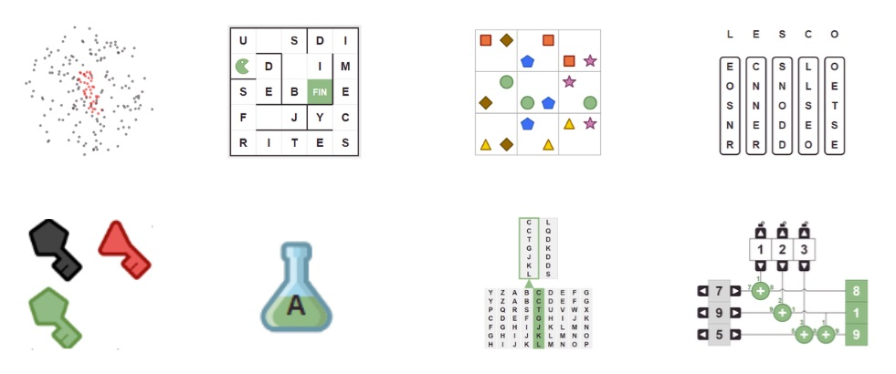
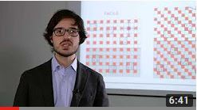
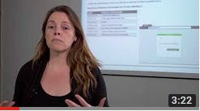
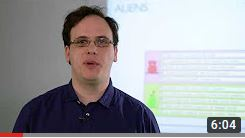
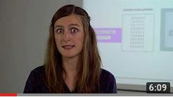
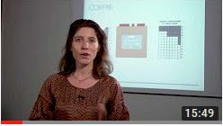

Les épreuves précédentes
Accès aux épreuves précédentes
Les épreuves du premier tour sont accessibles ici.

Sujets du premier tour d'années précédentes.
Les coordinateurs/coordinatrices ont accès à l'ensemble des résultats de leurs équipes pour l'édition en cours sur leur interface.
Sujets de finale d'éditions précédentes : 2024, 2023, 2022, 2020, 2019, 2018, 2017, 2016.
La correction et le guide de résolution de l'énigme proposée par la DGSE lors de la finale 2020 est téléchargeable ici.
Retrouvez ici les affiches des éditions précédentes : 2025, 2024, 2023, 2022, 2021, 2020, 2019, 2018, 2017, 2016, 2015.
Corrections vidéos
Regardez les vidéos de corrections des exercices du premier tour 2017-2018 sur la chaîne Youtube d'Inria !
-

Exercice "Réseau" corrigé par Matthieu Lequesne -

Exercice "Connexions" corrigé par Anne Canteaut -

Exercice "Aliens" corrigé par Razvan Barbulescu -

Exercice "Générateur" corrigé par Christina Boura -

Exercice "Coffre fort" corrigé par Aline Gouget
Les lauréat·e·s de l'édition 2025-2026
Près de 50 000 élèves ont participé au concours dans les 30 académies françaises et dans les établissements français à l'étranger. Merci à tou·te·s !
Félicitations aux trois équipes gagnantes :
- Premier prix : Côme P.-B., Matthieu O., Louis L. et Nicolas Tâm R. du Lycée Ermitage, Maison-Laffitte.
- Deuxième prix : Noam A., Younes E.-O., Antonin H. et Samuel L. du Lycée Victor Hugo de Besançon.
- Troisième prix : Maximilien B., Nicolas B., Antoine D. et Tran Hong Dat P. du Collège-Lycée Franco-Allemand à Versailles.
Nous offrons des lots à toutes les équipes finalistes.
Les lauréat·e·s de l'édition 2024-2025
Près de 50 000 élèves ont participé au premier tour dans les 30 académies françaises et dans les établissements français à l'étranger. Merci à tou·te·s !
Félicitations aux trois équipes gagnantes :
- Premier prix : Côme P.-B., Matthieu O., Louis L. et Nicolas Tâm R. du Collège Ermitage, Maison-Laffitte.
- Deuxième prix : Daniil J., Raphaël D., Youssef E. et Marie V. du Collège et Lycée Jean Baptiste de la Salle à Rouen.
- Troisième prix : Alexia C., et Theodor B. du Collège Notre Dame de Jamhour à Baabda (Liban).
Nous offrons des lots à toutes les équipes finalistes.
Les lauréat·e·s de l'édition 2023-2024
Près de 53 000 élèves ont participé au premier tour dans les 30 académies françaises et dans les établissements français à l'étranger. Merci à tou·te·s !
Félicitations aux trois équipes gagnantes :
- Premier prix : Enguerrand B., Nils D, Matan I. et Pierre M. du Collège-Lycée Franco-Allemand à Versailles.
- Deuxième prix : Elisa C., Marius D, Léo-Paul L. et Arylès M. du Collège et Lycée Jean Baptiste de la Salle, Rouen.
- Troisième prix : Lucie A.M., Paul M., Nicolas K.-N. et Norah T. de l'Ecole Alsacienne de Paris.
Nous offrons des lots à toutes les équipes finalistes.
Les lauréat·e·s de l'édition 2022-2023
Près de 70 000 élèves ont participé au premier tour dans les 30 académies françaises et dans les établissements français à l'étranger. Merci à tou·te·s !
Félicitations aux trois équipes gagnantes :
- Premier prix : Hélian H. et Lucas S. du Lycée de la Plaine de l'Ain.
- Deuxième prix : Ilian B., Kenzo M., Romain B. et Timothé V. du Lycéee Marie Reynoard.
- Troisième prix : Elias K., Quentin C., Nathan P. et Théo P. du lycée Ledoux.
Nous offrons des lots à toutes les équipes finalistes ainsi qu'à la meilleure équipe de chaque académie.
Les lauréat·e·s de l'édition 2021-2022
Près de 53 000 élèves ont participé au premier tour dans les 30 académies françaises et dans les établissements français à l'étranger. Merci à tou·te·s !
Félicitations aux trois équipes gagnantes :
- Premier prix : Daniel P., Nicolas C. et Samantha P. du Lycée Rochambeau de Bethesda (USA).
- Deuxième prix : Clémentine P. du lycée International de Ferney-Voltaire.
- Troisième prix : Enguerrand B., Matan I., Nils D. et Pierre M. du lycée franco-allemand de Buc.
Nous offrons des lots à toutes les équipes finalistes ainsi qu'à la meilleure équipe de chaque académie.
Les lauréat·e·s de l'édition 2020-2021
Plus de 47 000 élèves ont participé au premier tour dans les 30 académies françaises. Merci à tou·te·s !
Félicitations aux trois équipes gagnantes :
- Premier prix : Itaï I., Maïten J., Théo H. et Luc E. du Lycée franco-allemand de Buc.
- Deuxième prix : Erik D., Nathan F., Antoine B. et Paolo R. du Collège Hoche de Versailles.
- Troisième prix : Sarah C., Tiphaine G. et Oscar V. de l'Ecole Alsacienne de Paris.
Nous offrons des lots à toutes les équipes finalistes.
Les lauréat·e·s de l'édition 2019-2020
Plus de 65 000 élèves ont participé au premier tour dans les 30 académies françaises. Merci à tou·te·s !
Félicitations aux trois équipes gagnantes :
- Les trois premiers prix ont été remportés par trois équipes du lycée franco-allemand de Buc, félicitations aux élèves :
- Aurore G., Alain T., Théo C., Romain C., Noelie R., Matthieu C., Anatole C., Aimeric D., Maïten J., Théo H., Itaï I. et Luc E.
Nous offrons des lots à toutes les équipes finalistes ainsi que la meilleure équipe de chaque académie.
Les lauréat·e·s de l'édition 2018-2019
Plus de 60 000 élèves ont participé au premier tour dans les 30 académies françaises. Merci à tou·te·s !
Félicitations aux trois équipes gagnantes :
- Les trois premiers prix ont été remportés par trois équipes du lycée franco-allemand de Buc, félicitations aux élèves :
- Ulysse B, Victor J., Léa V., Samy M., Louis F., Grégoire C., Maher B., Virgile T., Jeanne M., Yassir B., Aurélien F. et Irene M.
Les meilleures équipes de chaque académie ont été invitées à visiter un centre de recherche universitaire ou industriel, pour un total de 18 laboratoires.
Les lauréat·e·s de l'édition 2017-2018
Plus de 52 000 élèves ont participé au premier tour, inscrit·e·s par 1062 enseignant·e·s. Merci à tou·te·s !
Félicitations aux trois équipes gagnantes :
- Premier prix : William B., Cédric S., Thomas H. et Thien-An T. du Lycée International de l'Est Parisien à Noisy-le-Grand (académie de Créteil).
- Deuxième prix : Robin M. et Nathan H. de l'Institut Notre Dame de Saint-Germain-en-Laye (académie de Versailles).
- Troisième prix : Baptiste V., Léo C., Claire V. et Solal M. du Lycée Claude Monet de Paris (académie de Paris).
Les 10 meilleur·e·s élèves de chaque académie ont été invité·e·s à visiter un centre de recherche universitaire ou industriel, pour un total de 24 laboratoires.
Les lauréat·e·s de l'édition 2016-2017
Le nombre de participant·e·s a dépassé 47 000 élèves et le nombre d'enseignant·e·s 1500. Merci à tou·te·s !
Félicitations aux trois équipes gagnantes :
- Premier prix : Maëna Q., Cyprien D., Pierre A. et Vianney L. du Collègue-lycée Franco-Allemand, Buc, académie de Versailles.
- Deuxième prix : Clara W., Centre de formation des apprentis Heinrich Nessel, Haguenau, académie de Strasbourg.
- Troisième prix : Jean Z., Yanis J., Giani N. et Hugo G. Lycée Algoud-Laffemas, Valence, académie de Grenoble.
Les 10 meilleur·e·s élèves de chaque académie ont été invité·e·s à visiter un centre de recherche universitaire ou industriel, pour un total de 22 laboratoires.
Les lauréat·e·s de l'édition 2015-2016
Plus de 17 000 élèves ont participé à la première édition du concours, coordonné·e·s par plus de 500 enseignant·e·s. Merci à tou·te·s les élèves et enseignant·e·s pour leur participation.
Félicitations aux trois équipes gagnantes :
- Premier prix : Clara D., Olivier F., Sandy R. et Sébastien B. du Lycée Blaise Pascal, Orsay.
- Deuxième prix : Hugo T., Loïc T., Louise R. et Paul T du Lycée Henri IV, Paris.
- Troisième prix : Laurine S., Ambroise F., Clément W et Nunzia R du Lycée Henri IV, Paris.